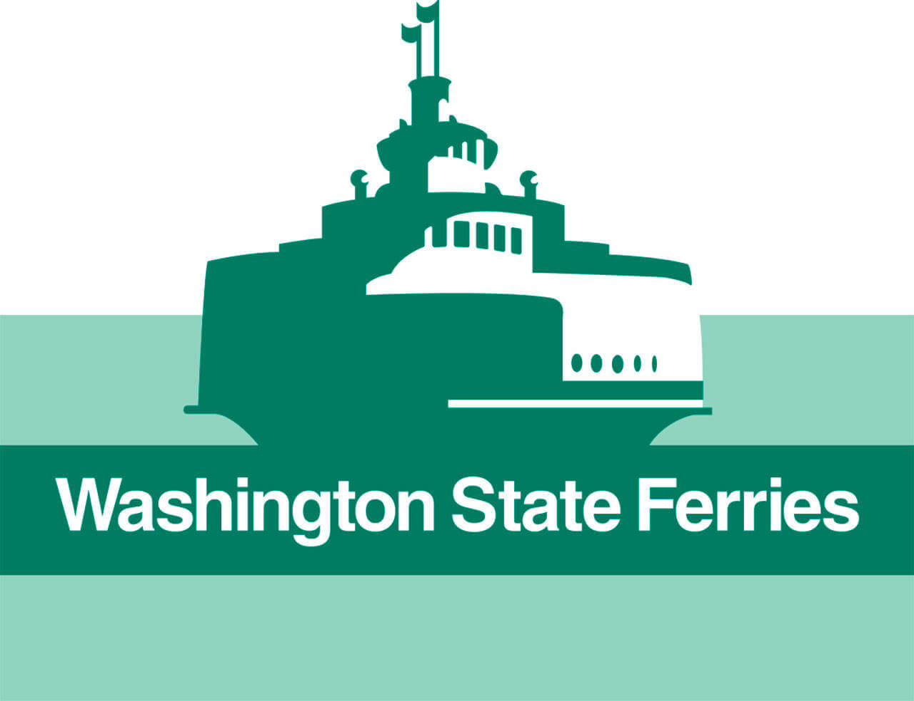

WSDOT Wave2Go
Redesigning the ferry ticketing experience
PROBLEM
WSDOT receives too many inquiries about purchasing ferry tickets.
The Washington State Department of Transportation (WSDOT) receives too many calls and emails requesting support for purchasing ferry tickets. For some reason, users cannot confidently follow through with purchasing ferry tickets without help.
WSDOT's business goal was to increase self-service in their Wave2Go ferry ticketing site. My question was: what in the existing site ws causing users to request help so often?
Role: UX Reseacher/Designer (solo Design Challenge)
Tools: Pencil and Paper, Miro
Timeframe: 2.5 Hours (Feb 2021)

DESIGN SCOPE
Elderly users are missing crucial information on ferry ticket usage in the Wave2Go site.
With just a few hours to complete this design challenge, I needed to pinpoint specific users to focus my design toward, otherwise I could have designed for hours. I chose to split my options by age group, and ended up choosing the elderly.
I felt this group was more likely to seek help for online purchases and ticket information. I anticipated their pain points would encapsulate those of younger users as well. Next, I brainstormed pain points elder users might face that could have led to the problem.
PROTO-PERSONA
Alfred wants to surprise his wife with a ferry trip for their anniversary.
After narrowing down the problem space, I quickly developed a proto-persona. I used the persona's goals and pain points to identify areas of improvement for the current site for meeting the business goal.
STORYBOARDING
Illustrating Alfred's painpoints through storytelling.
I created a storyboard to depict the pain points for Alfred's specific scenario and further put myself in his shoes.
EXISTING SITE AUDIT
The existing site provided an overwhelming amount of information that was difficult for new users to absorb.
I audited the existing Wave2Go site to determine the roots of the problem. Why were elderly users missing crucial information? The main theme I noticed was there was too much information displayed on the ticket site at once. Users were likely entering the site for specific ticket types, but we presented with too much irrelevant information.
Action Priority Matrix
Prioritizing ideas into 3 actionable improvements.
Using the audit data, I listed ideas I had for addressing Alfred's pain points then prioritized them based on impact and effort. I moved forward with three ideas that improved and built upon existing content, rather than those that involved new features. Because the problem space was vague, I felt it made sense to constrain the actionable ideas to those that didn't stray too far from the company's brand and existing userbase.
RE-DESIGN
Sketching ideas for how to present ferry ticket information in a clear and disgestible format.
I sketched my chosen ideas and presented them to my client. My general solution was to group different ticket types for users to navigate through and provide a more info section on the site to present ticket details that were already being displayed in the current site, but in an easier to read format. This information is also shown in the cart when getting ready to purchase the tickets.
TRADE-OFFS + SUCCESS METRICS
Things to consider with this re-design and determining whether it really works.
-
Existing users might find the additional steps from the new groupings to be annoying. However, I believe they could easily get used to them and the benefits outweighed the cons. Perhaps something to think about here is adding an option where returning user can save their typical purchases.
-
Self-service purchases and purchase time. An obvious success metric for this re-design is to measure the amount of users that follow through with purchasing tickets without help and how quickly they do so. We could consider including an optional survey for new users to complete following their purchases to gather feedback on whether they were clear on their ferry tickets usages.
-
Cart actions. The existing site auto-moves users to the cart when they click "Add to Cart". This re-design removes this,in case users want to purchase multiple ticket types. We could measure whether users are going back to purchase more tickets / re-read information when in the cart. This could provide insight on whether they're clear on ticket usage.
CONCLUSION
What I could have done better in my first design challenge.
-
Start with assumptions and constraints. I was only given the business goal for this design challenge so the information I had to work with was quite vague. Normally, I'd ask clarifying questions to fully understand the problem. I could have benefited from creating assumptions and constraints earlier on the design process to better narrow down the problem space.
-
Narrowing down the problem itself. I spent a lot of time narrowing down the problem. Afterwards, it felt like many of those processes provided the same outcome and felt redundant. For my next design sprint/challenge, I will focus on narrowing down a problem space quicker so I have more time to work on the actual solution.
Thanks for reading!
Check out my other work